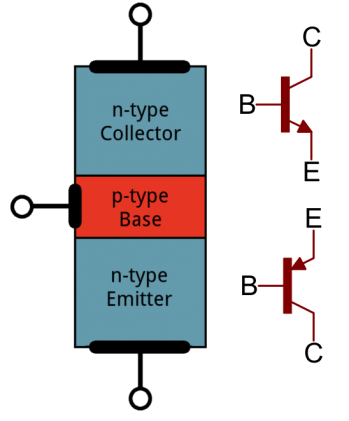
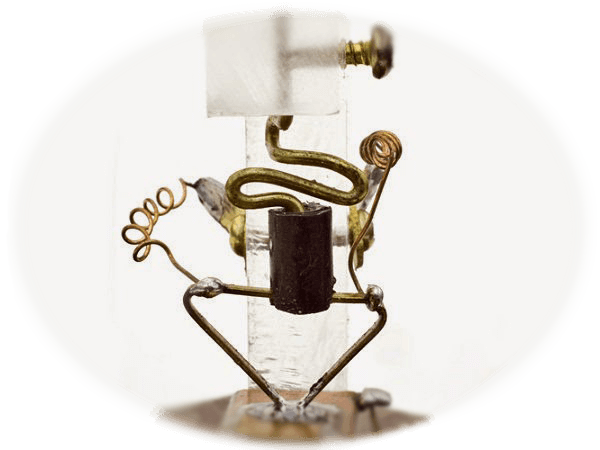
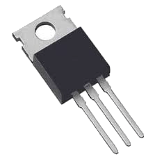
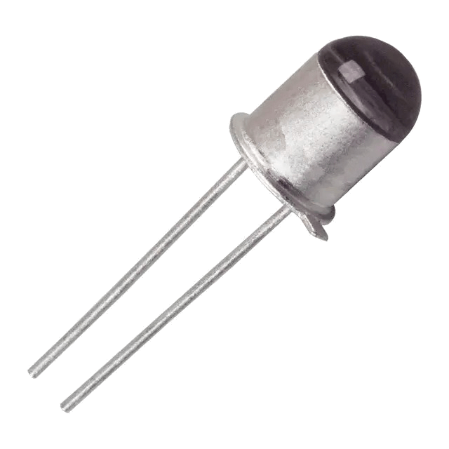
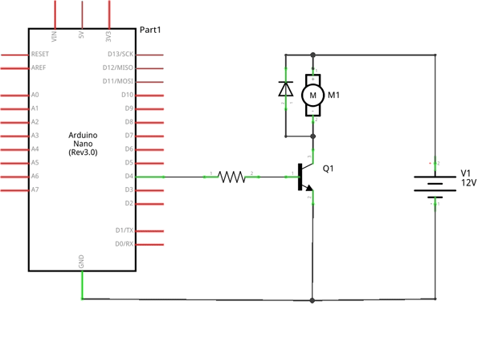

En este tema conoceremos las aplicaciones de un transistor y funcionamiento como conmutador y amplificador.
(1) x Placa Arduino
(1) x Protoboard
(1) x Transistor
(2) x LED
(2) x Resistencia de 100 Ohm
(x) x M M cables (cables de macho a macho)
Ciertos dispositivos tecnológicos necesitan una corriente eléctrica mayor que la que proporciona la placa de Arduino y para ello se utiliza el transistor.
El transistor es sin duda el componente electrónico más importante. Está formado por 3 capas de material
semiconductor, cada una con un terminal metálico para poder conectarlo a los circuitos. Los materiales
semiconductores se pueden comportar como aislantes o conductores según la energía que reciban, de ahí su
versatilidad en el campo de la electrónica.
Los 3 terminales de los transistores son:
- Colector: Entrada de corriente.
- Base: Entrada de corriente. Regula el funcionamiento.
- Emisor: Salida de corriente.

Según la forma en la que conectemos los terminales del transistor a resistencias externas éste puede
funcionar de 3 formas:
- Como interruptor abierto o en “corte”: Si la corriente que circula por la base es
nula, normalmente debido a que se conecta a ella una resistencia de un valor muy elevado, el
transistor no permite el paso de corriente entre colector y emisor.
- Como interruptor cerrado o funcionamiento en zona “activa” o "conducción": La
resistencia conectada a la base del transistor tiene un valor que permite circular corriente a
través de ella. De esta manera hay circulación de corriente entre el colector y emisor cuyo valor
será proporcional a la corriente que circula por la base. Normalmente mucho mayor con lo que
producirá el efecto de amplificación.
- Funcionamiento en zona de “saturación": Si se va aumentando la intensidad que
circula por la base llega un momento que la intensidad entre colector y emisor ya no aumenta más; es
decir, se satura.
Llamado también «transistor de punta de contacto», fue el primer transistor capaz de obtener ganancia.
Consta de una base de germanio, semiconductor para entonces mejor conocido que la combinación cobre-óxido de
cobre, sobre la que se apoyan, muy juntas, dos puntas metálicas que constituyen el emisor y el colector.
La corriente de base es capaz de modular la resistencia que se «ve» en el colector, de ahí el nombre de
transfer resistor. Es difícil de fabricar (las puntas se ajustaban a mano), frágil (un golpe podía desplazar
las puntas) y ruidoso. En la actualidad ha desaparecido.

También llamado BJT por sus siglas del inglés (bipolar junction transistor) se fabrica sobre un monocristal de material semiconductor como el germanio, el silicio o el arseniuro de galio, cuyas cualidades son intermedias entre las de un conductor eléctrico y las de un aislante.
Sobre el sustrato de cristal se contaminan en forma muy controlada tres zonas sucesivas, N-P-N o P-N-P (P-> carga positiva;N-> carga negativa), dando lugar a dos uniones PN. La tres zonas contaminadas dan como resultado transistores PNP o NPN, donde la letra intermedia siempre corresponde a la región de la base, y las otras dos al emisor y al colector que, si bien son del mismo tipo y de signo contrario a la base, tienen diferente contaminación entre ellas.

El transistor de efecto de campo de unión (JFET), fue el primer transistor de efecto de campo en la
práctica. Lo forma una barra de material semiconductor de silicio de tipo N o P. En los terminales de la
barra se establece un contacto óhmico, tenemos así un transistor de efecto de campo tipo N de la forma más
básica.
Si se difunden dos regiones P en una barra de material N y se conectan externamente entre sí, se producirá
una puerta. A uno de estos contactos le llamaremos surtidor y al otro drenador. Aplicando tensión positiva
entre el drenador y el surtidor y conectando la puerta al surtidor, estableceremos una corriente, a la que
llamaremos corriente de drenador con polarización cero. Con un potencial negativo de puerta al que llamamos
tensión de estrangulamiento, cesa la conducción en el canal.

Los fototransistores son sensibles a la radiación electromagnética en frecuencias cercanas a la de la luz
visible; debido a esto su flujo de corriente puede ser regulado por medio de la luz incidente. Un
fototransistor es, en esencia, lo mismo que un transistor normal, solo que puede trabajar de 2 maneras
diferentes:
- Como un transistor normal con la corriente de base (IB) modo común.
- Como fototransistor, cuando la luz que incide en este elemento hace las veces de corriente de
base (IP) modo de iluminación.

Para nuestro trabajo, utilizaremos un transistor de unión bipolar tipo NPN.


Una vez efectuado todo el cableado, descargaremos el script del siguiente
enlace y lo cargaremos como hemos
aprendido.
En el ejemplo veremos como funciona nuestro transistor en modo de interruptor, y para ello, lo único que
hacemos es activar el pin del LED rojo.
En el ejemplo, conectamos el Pin 7 al LED rojo (con su resistencia de 100 Ohm). Después, conectamos el otro
terminal del LED rojo al colector del transistor. Luego conectaremos de nuevo el segundo terminal del LED rojo
a uno de los terminales del LED verde (con su resistencia de 100 Ohm). Ahora conectaremos el segundo
terminal del LED verde a la base del transistor. Finalmente conectaremos al emisor del transistor la tierra
(GND).
Vemos que el LED rojo se enciende con fuerza y que el verde también lo hace pero mínimamente. Curiosamente,
si desenganchamos el LED verde de su sitio, el LED rojo deja de funcionar.
Esto pasa por el propio funcionamiento del transistor. La base del transistor funciona como un interruptor
controlado por carga eléctrica, que cuando le llega un mínimo de carga, se excita y cierra el circuito entre
el colector y el emisor
Además, el transistor nos permite amplificar la corriente, ya que con una pequeña corriente que se aplique
en la base, se puede controlar una corriente de mayor intensidad.
En este ejemplo vemos dos de los funcionamientos de un transistor:
- Activado cuando tenemos el LED verde y le damos corriente a la base, dejando el circuito cerrado.
- En corte cuando quitamos el LED verde y funciona como un interruptor abierto (no dejando pasar la
corriente).
Con el mismo circuito que tenemos como ejemplo, tenemos que hacer que nuestro LED rojo tenga una mayor
iluminación sin cambiar el tamaño de la resistencia, eliminando aquello que haga que nuestro
transistor pierda energía.
De esta forma, veremos funcionar el transistor en modo saturación.